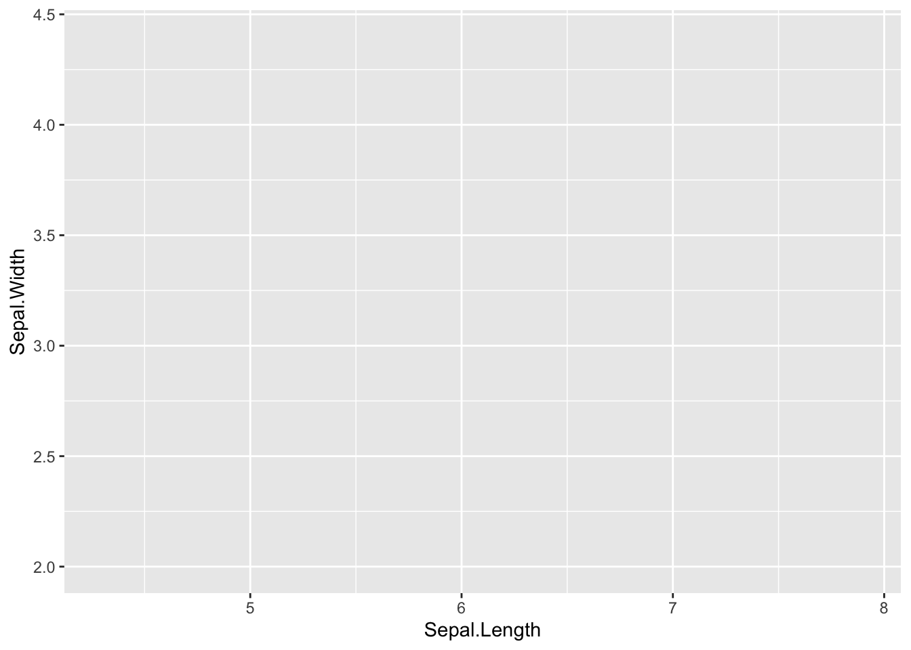
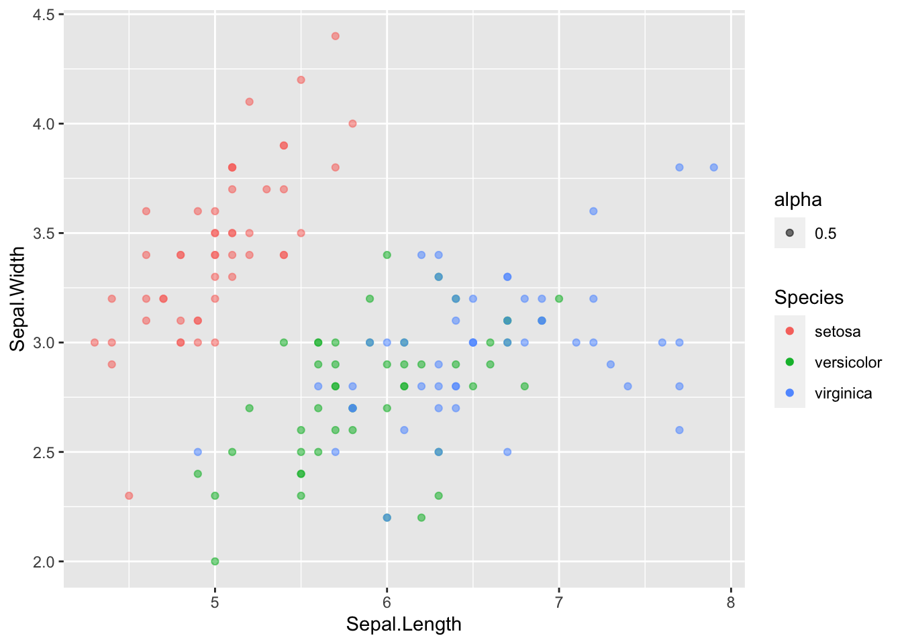
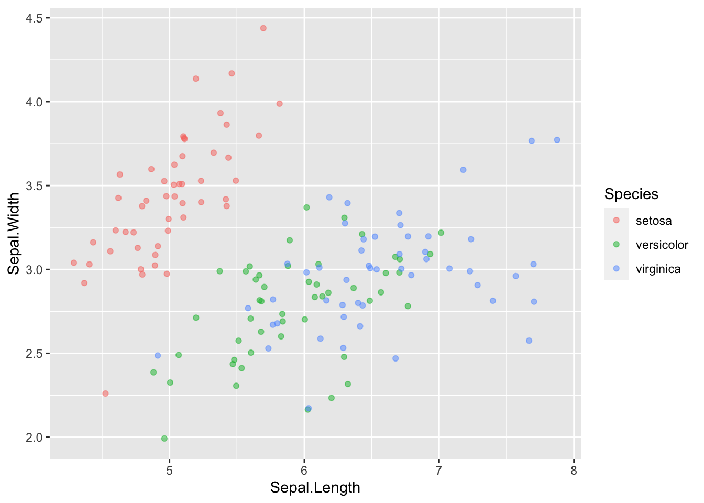
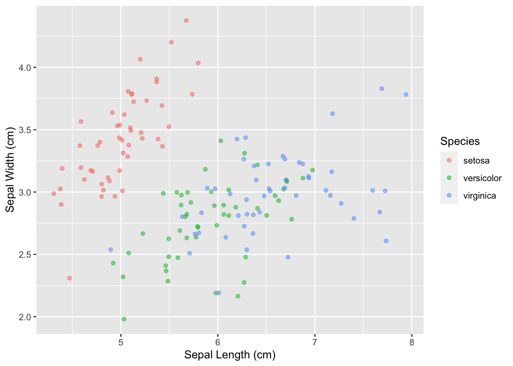
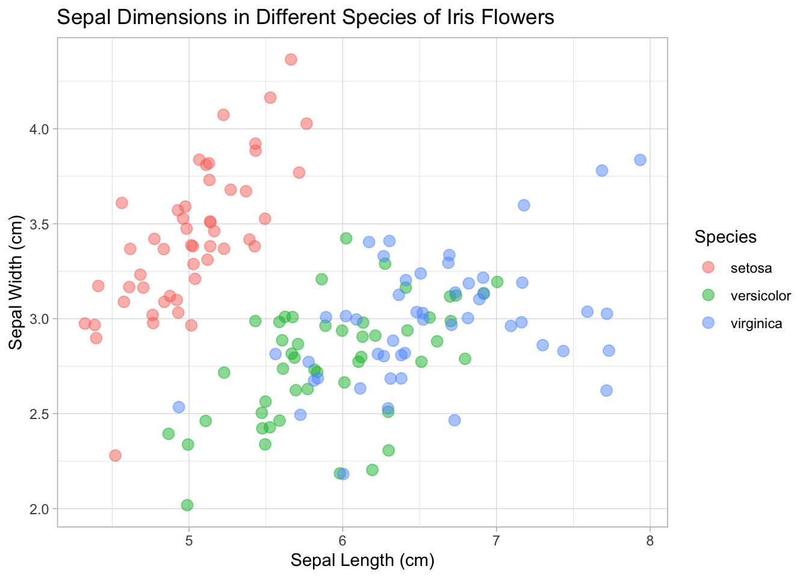
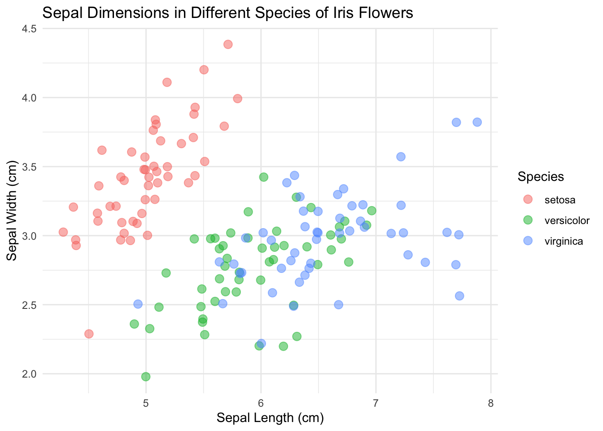

14 Walkthrough: Iris Scatterplot

14.1 Overview
This example goes through some work with the iris dataset to get to a finished scatterplot that is ready to present.
14.1.1 tl;dr
Here’s what we end up with:
library(ggplot2)
base_plot <- ggplot(data = iris, mapping = aes(x = Sepal.Length, y = Sepal.Width)) +
geom_point(aes(color = Species), size = 3, alpha = 0.5, position = "jitter") +
xlab("Sepal Length (cm)") +
ylab("Sepal Width (cm)") +
ggtitle("Sepal Dimensions in Different Species of Iris Flowers")
base_plot + theme_minimal()
Wondering how we got there? Read on.
14.1.3 Techniques
- Keyboard Shortcuts
- Viewing Data Structure/Dimensions/etc.
- Accessing Documentation
- Plotting with
ggplot2 - Layered Nature of
ggplot2/Grammar of Graphics - Mapping aesthetics in
ggplot2 - Overlapping Data: alpha and jitter
- Presenting Graphics
- Themes
14.2 Quick note on doing it the lazy way
Shortcuts are your best friend to get work done faster. And they are easy to find.
In the toolbar:
Tools > Keyboard Shortcuts Help OR ⌥⇧K
Some good ones:
- Insert assignment operator (
<-): Alt/Option+- - Insert pipe (
%>%): Ctrl/Cmd+Shift+M - Comment Code: Ctrl/Cmd+Shift+C
- Run current line/selection: Ctrl/Cmd+Enter
- Re-run previous region: Ctrl/Cmd+Shift+P
Be on the lookout for things you do often and try to see if there is a faster way to do them.
Additionally, the RStudio IDE can be a little daunting, but it is full of useful tools that you can read about in this cheatsheet or go through with this DataCamp course: Part 1, Part 2.
Okay, now let’s get to it…
14.3 Viewing data
Let’s start with loading the package so we can get the data as a dataframe.
library(datasets)
class(iris)## [1] "data.frame"This is not a huge dataset, but it is helpful to get into the habit of treating datasets as large no matter what. Because of this, make sure you inspect the size and structure of your dataset before going and printing it to the console.
Here we can see that we have 150 observations across 5 different variables.
dim(iris)## [1] 150 5There are a bunch of ways to get information on your dataset. Here are a few:
str(iris)## 'data.frame': 150 obs. of 5 variables:
## $ Sepal.Length: num 5.1 4.9 4.7 4.6 5 5.4 4.6 5 4.4 4.9 ...
## $ Sepal.Width : num 3.5 3 3.2 3.1 3.6 3.9 3.4 3.4 2.9 3.1 ...
## $ Petal.Length: num 1.4 1.4 1.3 1.5 1.4 1.7 1.4 1.5 1.4 1.5 ...
## $ Petal.Width : num 0.2 0.2 0.2 0.2 0.2 0.4 0.3 0.2 0.2 0.1 ...
## $ Species : Factor w/ 3 levels "setosa","versicolor",..: 1 1 1 1 1 1 1 1 1 1 ...summary(iris)## Sepal.Length Sepal.Width Petal.Length Petal.Width
## Min. :4.300 Min. :2.000 Min. :1.000 Min. :0.100
## 1st Qu.:5.100 1st Qu.:2.800 1st Qu.:1.600 1st Qu.:0.300
## Median :5.800 Median :3.000 Median :4.350 Median :1.300
## Mean :5.843 Mean :3.057 Mean :3.758 Mean :1.199
## 3rd Qu.:6.400 3rd Qu.:3.300 3rd Qu.:5.100 3rd Qu.:1.800
## Max. :7.900 Max. :4.400 Max. :6.900 Max. :2.500
## Species
## setosa :50
## versicolor:50
## virginica :50
##
##
## # This one requires dplyr, but it's worth it :)
library(dplyr)
glimpse(iris)## Rows: 150
## Columns: 5
## $ Sepal.Length <dbl> 5.1, 4.9, 4.7, 4.6, 5.0, 5.4, 4.6, 5.0, 4.4, 4.9, 5.4, 4.…
## $ Sepal.Width <dbl> 3.5, 3.0, 3.2, 3.1, 3.6, 3.9, 3.4, 3.4, 2.9, 3.1, 3.7, 3.…
## $ Petal.Length <dbl> 1.4, 1.4, 1.3, 1.5, 1.4, 1.7, 1.4, 1.5, 1.4, 1.5, 1.5, 1.…
## $ Petal.Width <dbl> 0.2, 0.2, 0.2, 0.2, 0.2, 0.4, 0.3, 0.2, 0.2, 0.1, 0.2, 0.…
## $ Species <fct> setosa, setosa, setosa, setosa, setosa, setosa, setosa, s…Plotting the data by calling iris to the console will print the whole thing. Go ahead and try it in this case, but this is not recommended for larger datasets. Instead, use head() in the console or View().
If you want to learn more about these commands, or anything for that matter, just type ?<command> into the console. ?head, for example, will reveal that there is an additional argument to head called n for the number of lines printed, which defaults to 6. Also, you may notice there is something called tail. I wonder what that does?
14.4 Plotting data
Let’s plot something!
# Something's missing
library(ggplot2)
ggplot(iris)Where is it? Maybe if we add some aesthetics. I remember that was an important word that came up somewhere:
# Still not working...
ggplot(data = iris, mapping = aes(x = Sepal.Length, y = Sepal.Width))
Still nothing. Remember, you have to add a geom for something to show up.
# There we go!
ggplot(data = iris, mapping = aes(x = Sepal.Length, y = Sepal.Width)) +
geom_point()
Yay! Something showed up! Notice where we put the data, inside of ggplot(). ggplot is built on layers. Here we put it in the main call to ggplot. The data argument is also available in geom_point(), but in that case it would only apply to that layer. Here, we are saying, for all layers, unless specified, make the data be iris.
Now let’s add a color mapping by Species:
ggplot(data = iris, mapping = aes(x = Sepal.Length, y = Sepal.Width)) +
geom_point(aes(color = Species))
Usually it is helpful to store the main portion of the plot in a variable and add on the layers. The code below achieves the same output as above:
sepal_plot <- ggplot(data = iris, mapping = aes(x = Sepal.Length, y = Sepal.Width))
sepal_plot +
geom_point(aes(color = Species))14.5 Markdown etiquette
I’m seeing that my R Markdown file is getting a little messy. Working with markdown and chunks can get out of hand, but there are some helpful tricks. First, consider naming your chunks as you go. If you combine this with headers, your work will be much more organized. Specifically, the little line at the bottom of the editor becomes much more useful.
From this:

To this:

Just add a name to the start of each chunk:
{r <cool-code-chunk-name>, <chunk_option> = TRUE}
Now you can see what the chunks were about as well as get a sense of where you are in the document. Just don’t forget, it is a space after the r and commas for the other chunk options you may have like eval or echo. For more info, see our section on communicating results.
14.6 Overlapping data
Eagle-eyed viewers may notice that we seem to be a few points short. We should be seeing 150 points, but we only see 117 (yes, I counted). Where are those 33 missing points? They are actually hiding behind other points. This dataset rounds to the nearest tenth of a centimeter, which is what is giving us those regular placings of the points. How did I know the data was in centimeters? Running ?iris in the console of course! Ah, you ask a silly question, you get a silly answer.
# This plot hides some of the points
ggplot(data = iris, mapping = aes(x = Sepal.Length, y = Sepal.Width)) +
geom_point(aes(color = Species))
What’s the culprit? The color aesthetic. The color by default is opaque and will hide any points that are behind it. As a rule, it is always beneficial to reduce the opacity a little no matter what to avoid this problem. To do this, change the alpha value to something other than it’s default 1, like 0.5.
ggplot(data = iris, mapping = aes(x = Sepal.Length, y = Sepal.Width)) +
geom_point(aes(color = Species, alpha = 0.5))
Okay…a couple things with this.
14.6.1 First: the legend
First, did you notice the new addition to the legend? That looks silly! Why did that show up? Well, when we added the alpha into aes(), we got a new legend. Let’s look at what we are doing with geom_point(). Specifically, this is saying how we should map the color and alpha:
geom_point(mapping = aes(color = Species, alpha = 0.5))
So, we are mapping these given aesthetics, color and alpha, to certain values. ggplot knows that usually the aesthetic mapping will vary since you are probably passing in data that varies, so it will create a legend for each mapping. However, we don’t need a legend for the alpha: we explicitly set it to be 0.5. To fix this, we can pull alpha out of aes and instead treat it like an attribute:
ggplot(data = iris, mapping = aes(x = Sepal.Length, y = Sepal.Width)) +
geom_point(aes(color = Species), alpha = 0.5)
No more legend. So, in ggplot, there is a difference between where an aesthetic is placed. It is also called MAPPING an aesthetic (making it vary with data inside aes) or SETTING an aesthetic (make it a constant attribute across all datapoints outside of aes).
14.6.2 Second: jittering
Secondly, did this alpha trick really help us? Are we able to see anything in the plot in an easier way? Not really. Since the points perfectly overlap, the opacity difference doesn’t help us much. Usually, opacity will work, but here the data is so regular that we don’t gain anything in the perception department.
We can fix this by introducing some jitter to the datapoints. Jitter adds a little random noise and moves the datapoints so that they don’t fully overlap:
ggplot(data = iris, mapping = aes(x = Sepal.Length, y = Sepal.Width)) +
geom_point(aes(color = Species), alpha = 0.5, position = "jitter")
Consider your motives when using jittering. You are by definition altering the data, but it may be beneficial in some situations.
14.6.3 Aside: example where alpha blending works
We are dealing with a case where jittering works best to see the data, while changing the alpha doesn’t help us much. Here’s a quick example where opacity using alpha might be more directly helpful.
# lib for arranging plots side by side
library(gridExtra)
# make some normally distributed data
x_points <- rnorm(n = 10000, mean = 0, sd = 2)
y_points <- rnorm(n = 10000, mean = 6, sd = 2)
df <- data.frame(x_points, y_points)
# plot with/without changed alpha
plt1 <- ggplot(df, aes(x_points, y_points)) +
geom_point() +
ggtitle("Before (alpha = 1)")
plt2 <- ggplot(df, aes(x_points, y_points)) +
geom_point(alpha = 0.1) +
ggtitle("After (alpha = 0.1)")
# arrange plots
gridExtra::grid.arrange(plt1, plt2,
ncol = 2, nrow = 1)
Here it is much easier to see where the dataset is concentrated.
14.7 Formatting for presentation
Let’s say we have finished this plot and we are ready to present it to other people:

We should clean it up a bit so it can stand on its own.
14.8 Alter appearance
First, let’s make the x/y labels a little cleaner and more descriptive:
ggplot(data = iris, mapping = aes(x = Sepal.Length, y = Sepal.Width)) +
geom_point(aes(color = Species), alpha = 0.5, position = "jitter") +
xlab("Sepal Length (cm)") +
ylab("Sepal Width (cm)")
Next, add a title that encapsulates the plot:
ggplot(data = iris, mapping = aes(x = Sepal.Length, y = Sepal.Width)) +
geom_point(aes(color = Species), alpha = 0.5, position = "jitter") +
xlab("Sepal Length (cm)") +
ylab("Sepal Width (cm)") +
ggtitle("Sepal Dimensions in Different Species of Iris Flowers")
And make the points a little bigger:
ggplot(data = iris, mapping = aes(x = Sepal.Length, y = Sepal.Width)) +
geom_point(aes(color = Species), size = 3, alpha = 0.5, position = "jitter") +
xlab("Sepal Length (cm)") +
ylab("Sepal Width (cm)") +
ggtitle("Sepal Dimensions in Different Species of Iris Flowers")
Now it’s looking presentable.
14.9 Consider themes
It may be better for your situation to change the theme of the plot (the background, axes, etc.; the “accessories” of the plot). Explore what different themes can offer and pick one that is right for you.
base_plot <- ggplot(data = iris, mapping = aes(x = Sepal.Length, y = Sepal.Width)) +
geom_point(aes(color = Species), size = 3, alpha = 0.5, position = "jitter") +
xlab("Sepal Length (cm)") +
ylab("Sepal Width (cm)") +
ggtitle("Sepal Dimensions in Different Species of Iris Flowers")
base_plot
base_plot + theme_light()
base_plot + theme_minimal()
base_plot + theme_classic()
base_plot + theme_void()
I’m going to go with theme_minimal() this time.
So here we are! We got a lovely scatterplot ready to show the world!

14.10 Going deeper
We have just touched the surface of ggplot and dipped our toes into grammar of graphics. If you want to go deeper, I highly recommend the DataCamp courses on Data Visualization with ggplot2 with Rick Scavetta. There are three parts and they are quite dense, but the first part is definitely worth checking out.
with